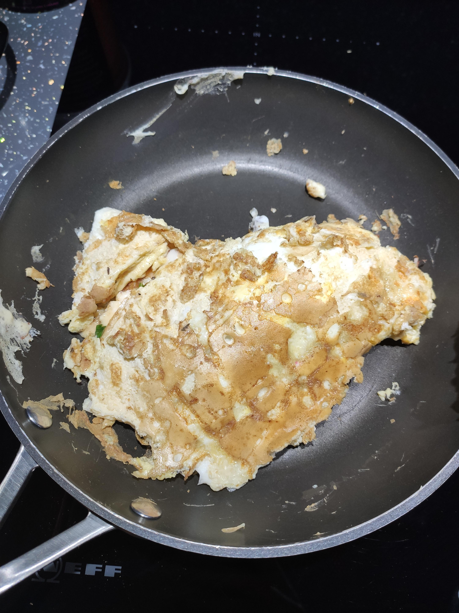

Gordon Ramsay’s Nightmare Omelette

How chefs describe it ?
Is it dinner? Is it breakfast? Is it even food? Who cares. This single slice of bread, smeared with an indecisive mix of chunky peanut butter and jelly, is your loyal companion when the world’s asleep and you're debating texting your ex. Pair with a glass of water and vague regret. Bonus: zero effort, maximum inner turmoil.
The ingredients you'll need :
- 3 eggs (hopefully not expired)
- A handful of mystery leftovers from the fridge
- That onion you forgot existed
- Cheese that may or may not have mold (cut the blue parts off = fine dining)
- Rage
The steps you should follow :
- Crack eggs aggressively, like you’re on Hell’s Kitchen.
- Whisk them while yelling “IT’S RAW” at your dog.
- Throw in leftovers: half-eaten fries? Go for it. Random broccoli? Sure.
- Add cheese. If it smells weird, it's aged.
- Pour into a pan and pretend you know what you’re doing.
- Flip omelette. Miss. Panic. Turn it into scrambled eggs mid-disaster.
- Serve with toast you scraped the burnt parts off of. Bon appétit, disaster chef.
Chef’s Tip: Insult yourself during cooking to stay in character.
Have a good meal !
Back to Home